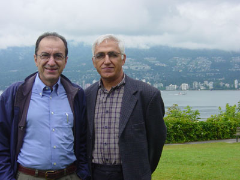
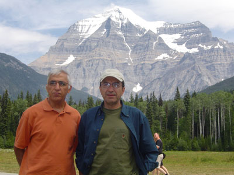
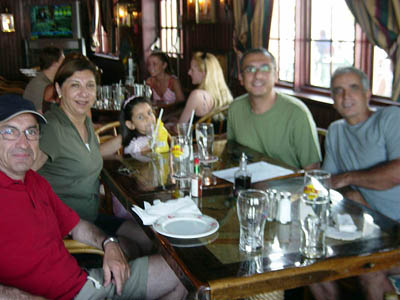
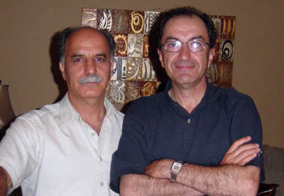
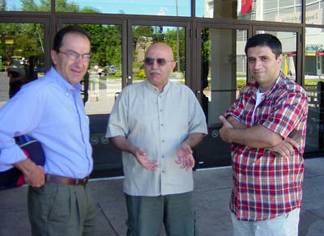
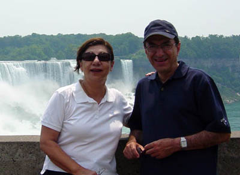
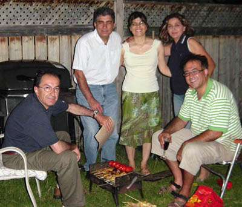
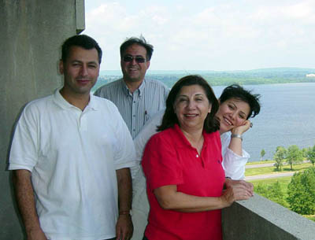
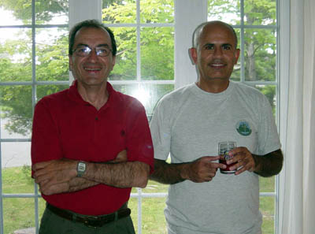

Copyright © Ali Parsa 1998-2011
All rights reserved
| Vancouver My first time in Canada was a delight, as I met many friends there. We started in Vancouver. The picture is of me and Javad Zabetian in this beautiful city. The only problem with Vancouver (and Canada, for that matter) is high price of tobacco. |  |
|  | We did a week-long tour of the Beautiful British Columbia with Javad Zabetian and his wife, Soheila. This is a picture of that tour showing me and Javad at the foot of Mt. Robson. This was the northernmost point (almost 53 degrees north) in our trip. |
Toronto At the Toronto Harbor with Shapour and a surprize meeting with Ramin Dehdashtian and his daughter, Hasti |  |
 | With Behrouz Ziaii, my companion in Bultaco and Rig-e Jenn projects. |
I met old Informatics Society friends Dariush Javan and Saeed Vahid in Toronto. Here we are at Timothy coffee house in Bayview shopping center and Dariush is starting his five hour long discussion of immortality. We already look bored. |  |
|  | Our first glimpse of the mighty Niagara Falls. The commercialization of the area was a disappointment and ruined all the romantic thoughts I had of the place since I saw Marylin Monroe in the film Niagara at the age of five. |
Ottawa | |
| At Keyvan Pezeshki's place in Ottawa. The Bar-B-Q didn't work and we had to use the old fashioned Iranian traditional 'Manghal' to make kabab. Keyvan and I were colleagues in the IDS back in late 1980s. His wife, Pooneh and Saied (also from IDS days) and his wife are seen. |  |
|  | We met Bahar Masoumi and her husband, Saied in Ottawa. Keyvan took us to their highrise appartement complex with a beautiful view of the river. |
Montreal | |
| In Montral we enjoyed the hospitality of Babak and Afsoon Safa. Babak was my colleague in Simia Computer Graphics, a company that I headed in mid-1990's. |  |

Copyright © Ali Parsa 1998-2011
All rights reserved